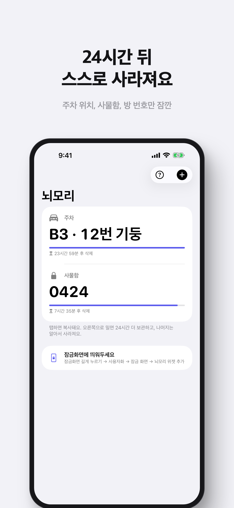
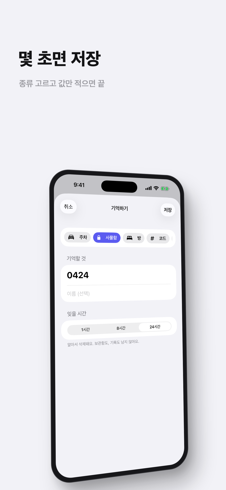
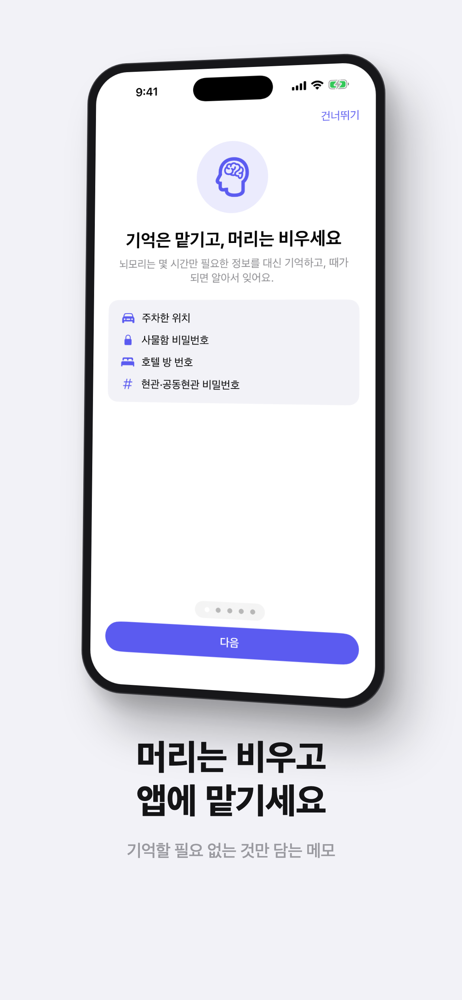
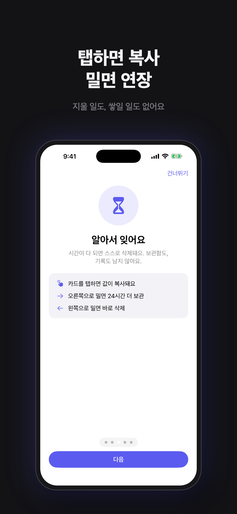

뇌모리
24시간 뒤 사라지는 임시 기억
주차한 층, 사물함 번호, 호텔 방 번호. 몇 시간만 기억하면 되는 정보만 담는 메모장입니다. 저장한 메모는 정해진 시간이 지나면 스스로 사라지고, 잠금화면 위젯에 늘 떠 있습니다.




24시간 뒤 사라지는 임시 기억
주차한 층, 사물함 번호, 호텔 방 번호. 몇 시간만 기억하면 되는 정보만 담는 메모장입니다. 저장한 메모는 정해진 시간이 지나면 스스로 사라지고, 잠금화면 위젯에 늘 떠 있습니다.



